Capturing the Images
Before continuing with image warping and mosaicing I first captured a set of images from around the UC Berkeley campus to use throughout the project.
Doe Library
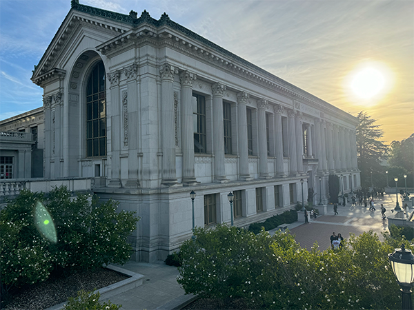Hearst Mining
Wheeler Hall

IHouse Left

Law and Society Left
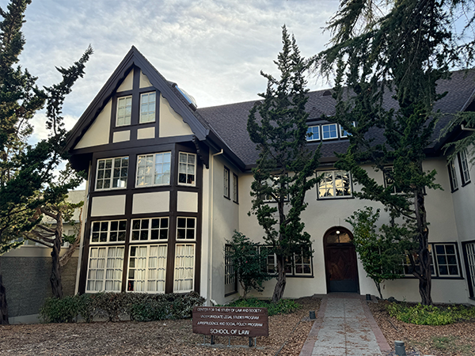VLSB Left
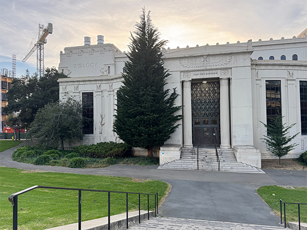IHouse Right
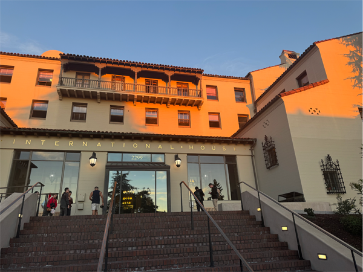Law and Society Right

VLSB Right

Recovering Homographies
Before we are able to warp images, we first need to recover the parameters of the
transformation between each image.
In our case, the transformation is a homography and is given by:
\[
\mathbf{p'} = H \mathbf{p}
\]
where \( H \) is a \( 3 \times 3 \) matrix with 8 degrees of freedom (since the bottom-right
entry is set to 1 for normalization), and \( \mathbf{p} \) and \( \mathbf{p'} \) are the
homogeneous coordinates of the points in the two images. This can be written as:
\[
\begin{bmatrix}
x' \\
y' \\
1
\end{bmatrix}
=
\begin{bmatrix}
h_1 & h_2 & h_3 \\
h_4 & h_5 & h_6 \\
h_7 & h_8 & 1
\end{bmatrix}
\begin{bmatrix}
x \\
y \\
1
\end{bmatrix}
\]
To recover the homography matrix \( H \), we set up a system of linear equations
using the point correspondences from the two images. The system takes the following form:
\[
\begin{bmatrix}
x_1 & y_1 & 1 & 0 & 0 & 0 & -x'_1 x_1 & -x'_1 y_1 \\
0 & 0 & 0 & x_1 & y_1 & 1 & -y'_1 x_1 & -y'_1 y_1 \\
x_2 & y_2 & 1 & 0 & 0 & 0 & -x'_2 x_2 & -x'_2 y_2 \\
0 & 0 & 0 & x_2 & y_2 & 1 & -y'_2 x_2 & -y'_2 y_2 \\
\vdots & \vdots & \vdots & \vdots & \vdots & \vdots & \vdots & \vdots \\
x_n & y_n & 1 & 0 & 0 & 0 & -x'_n x_n & -x'_n y_n \\
0 & 0 & 0 & x_n & y_n & 1 & -y'_n x_n & -y'_n y_n
\end{bmatrix}
\begin{bmatrix}
h_1 \\
h_2 \\
h_3 \\
h_4 \\
h_5 \\
h_6 \\
h_7 \\
h_8
\end{bmatrix}
=
\begin{bmatrix}
x'_1 \\
y'_1 \\
x'_2 \\
y'_2 \\
\vdots \\
x'_n \\
y'_n
\end{bmatrix}
\]
In this setup, the left-hand matrix grows by two additional rows for each new
correspondence point pair, and the right-hand vector grows similarly with each new \( (x'_i, y'_i) \) pair.
To avoid the system being underdetermined, we require at least 4 point correspondences
between the two images. However, with only 4 correspondences, the solution may be sensitive
to noise and instability. When there are more than 4 correspondences, resulting in an overdetermined
system, we can solve for \( H \) using least squares, providing a good approximate solution
even in the presence of noise or small errors in the correspondences.
Image Rectification
Using this homography we can now rectify images. To do this we manually select any known rectangular surface within an image and map it to an appropriately sized rectangle, yielding the following results:
Doe Library
Doe Library Points
Doe Library Rectified
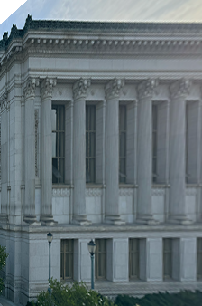Hearst Mining
Hearst Mining Points
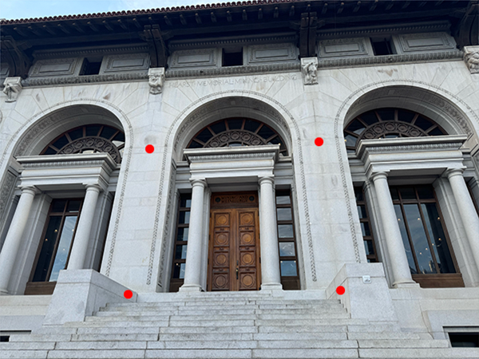Hearst Mining Rectified
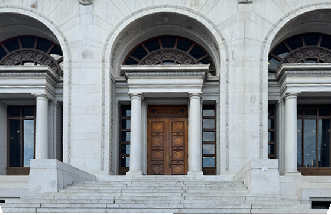Wheeler Hall
Wheeler Hall Points

Wheeler Hall Rectified

Image Blending
The image blending process uses a distance transform approach to smoothly combine two images. First, the source image is warped using a homography matrix and both images are placed on a larger canvas. Distance transforms are computed from the alpha channels, with each pixel's value representing its distance to the nearest edge. These transforms are normalized and used as blending weights. Gaussian smoothing is applied to ensure soft transitions in overlapping areas. The images are then blended using a weighted combination of the distance transforms. The alpha channel is handled by taking the maximum value from both images, ensuring correct transparency. This method ensures smooth, seamless blending based on pixel proximity to image edges.
IHouse Left
IHouse Right
IHouse
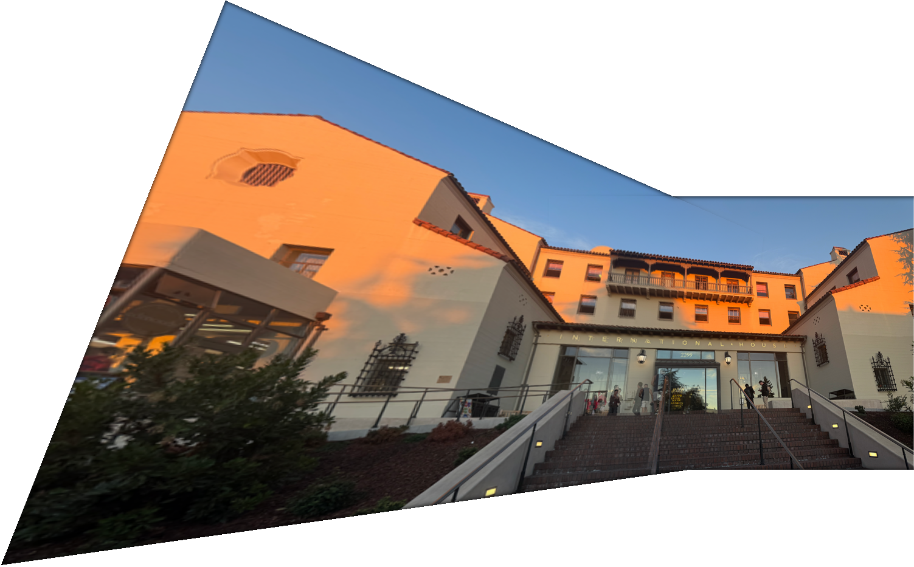Law and Society
Law and Society Right
Law and Society Mosaic

VLSB Left
VLSB Right
VLSB Mosaic

Harris Interest Point Detector
The Harris corner detector identifies distinctive image points by analyzing local gradient patterns around small patches. The implementation computes a response matrix by examining sums of gradient products in local Gaussian windows. The response is large when there are strong gradients in multiple directions, indicating a corner. To avoid unreliable detections near image boundaries, corners within 20 pixels of the border are discarded. While this creates a dense set of interest points that may be impractical for subsequent feature matching, it provides a solid foundation for further filtering steps.
Adaptive Non-Maximal Suppression (ANMS)
As mentioned previosuly Harris returns a dense set of corners that prove to be unreliable for matching features. To remidy this we can run adaptive non-maximal suppression to select strong corners that are spaced throughout the image. We find 500 of these points determined by their suppression radius defined by: \[ r_i = \min_j \, |\mathbf{x}_i - \mathbf{x}_j|, \; \text{s.t.} \; f(\mathbf{x}_i) < c_{\text{robust}} f(\mathbf{x}_j), \; \mathbf{x}_j \in \mathcal{I} \] The result of Harris Interest Point Detection and ANMS are as follows:
IHouse Harris Left
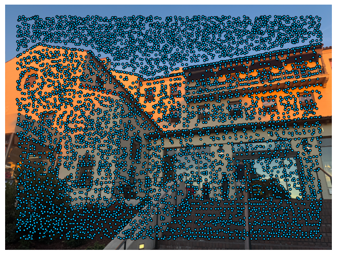IHouse Left ANMS

IHouse Harris Right

IHouse Right ANMS

Law Harris Left
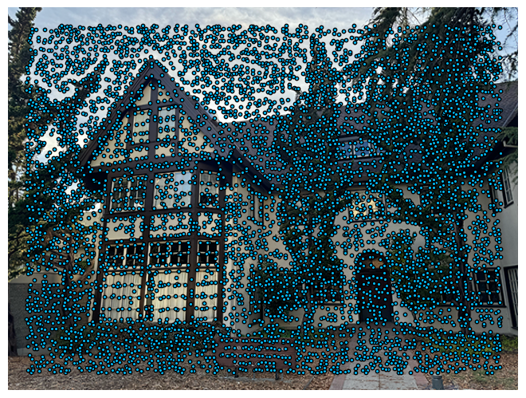Law Left ANMS

Law Harris Right

Law Right ANMS
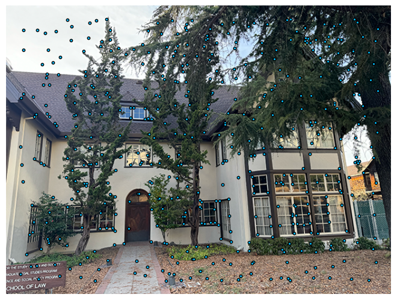VLSB Harris Left

VLSB Left ANMS
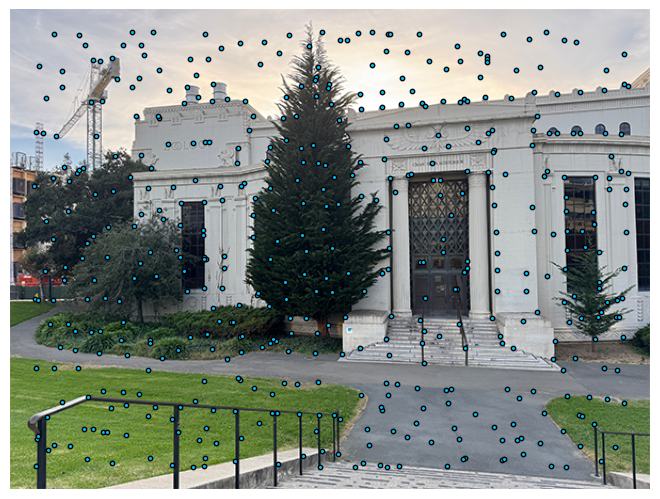VLSB Harris Right

VLSB Right ANMS

Feature Descriptor Extraction
After finalizing interest points, we extract features for each one, take a 40 x 40 window around each point, then downsample it by a factor of 5 to obtain an 8 x 8 patch. Next, we apply bias/gain normalization to ensure the patch has zero mean and unit variance. Finally, we flatten the patch into a vector, resulting in a feature descriptor for each interest point.
Feature Matching
After extracting features we need to match across images to form correspondences. We identify matching descriptors between two images by calculating the Euclidean distance between each pair of feature descriptors. For each descriptor in the first image, it finds the two closest matches in the second image and computes the ratio between the smallest and second smallest distances. If this ratio is below the specified threshold, the match is considered reliable, and the index pair is added to the list of matches. This approach filters out ambiguous matches, improving the accuracy of feature matching. The following are a sample of the images after feature matching has been performed.


Feature Descriptor Extraction
Even with the attempt to filter the matches you can see that there are still some
subpar matches. This is because the matches were computed with least squares
which is not very robust against outliers. To further filter the matches and ensure
that the matches used to recover homographies are not affected by these outliers we
can apply RANSAC and select only a subset of the best points.
RANSAC can be computed using the following steps:
1. randomly select 4 feature matches
2. compute the exact homography \( H \)
3. identify inliers that satisfy \( \text{dist}(p_i', Hp_i) < \epsilon \)y
4. repeat steps 1-3 until reaching the maximum number of iterations
5. keep the largest set of inliers found across all iterations
6. recompute the homography \( H \) using a least-squares approach on this largest inlier set.
After applying RANSAC the feature matches look like the following:


Results
Below are the results of manually stitching images vs automatically stitching them:
IHouse Manual
Law and Society Manual
VLSB Manual
IHouse Automatic
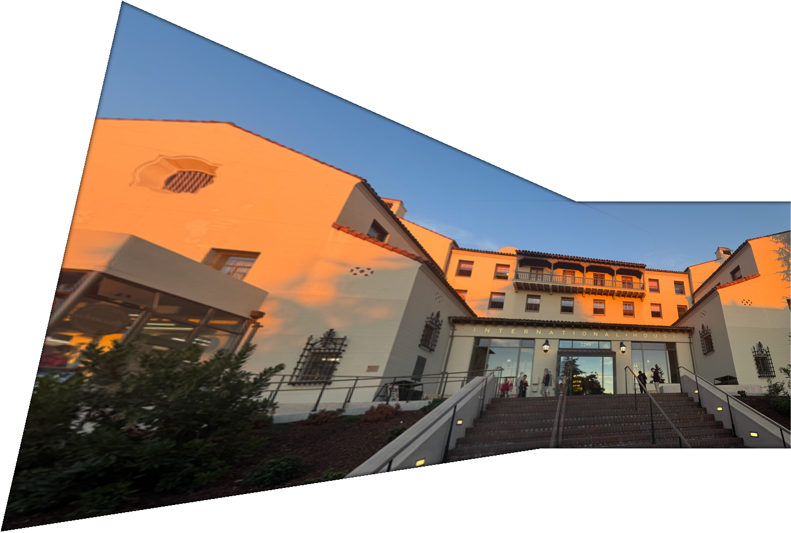Law and Society Automatic

VLSB Automatic

What I learned
I was particularly intrigued by the power of RANSAC. Even after carefully extracting and matching features I was surprised at how many erroneous matches there were. I was equally as surprised how effective RANSAC was in extracting only the good matches and thus being able to recover an effective homography.